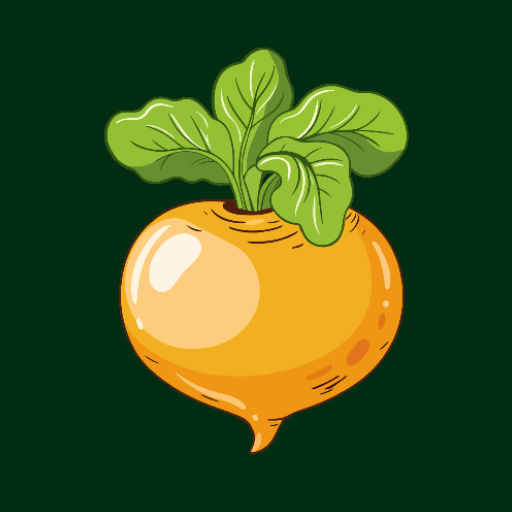
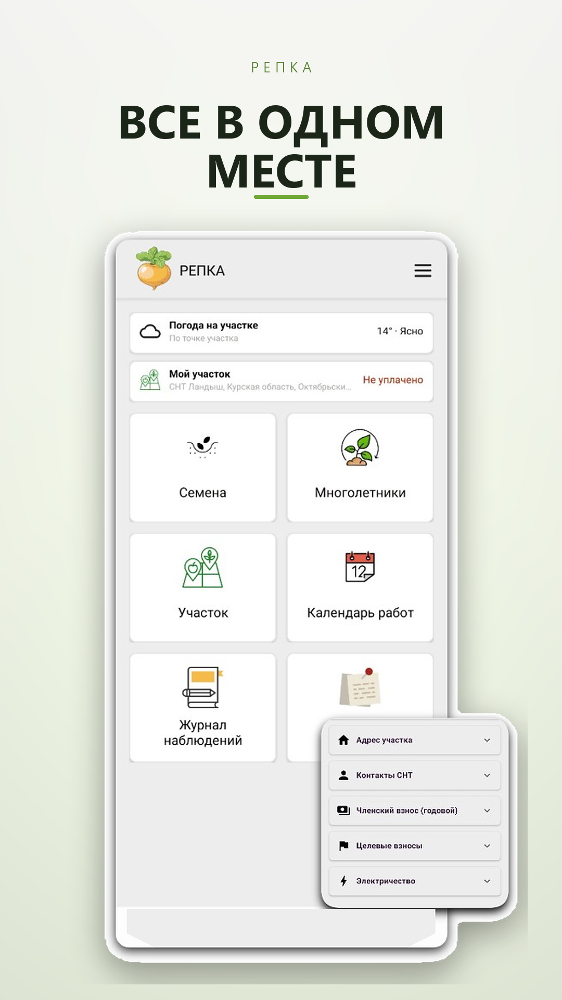
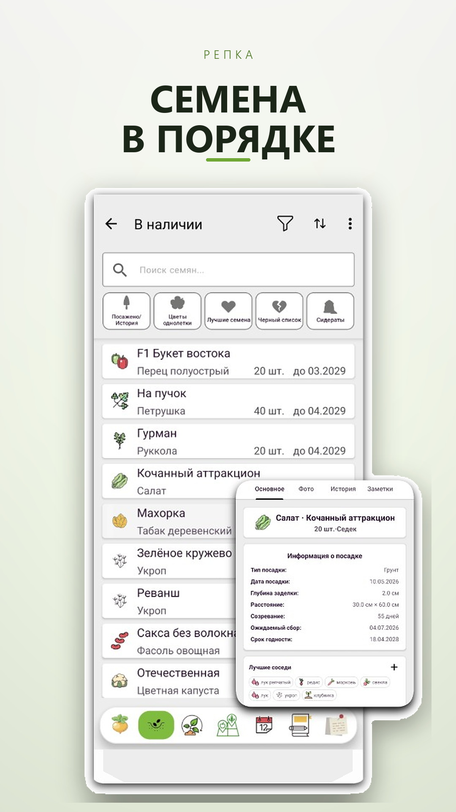
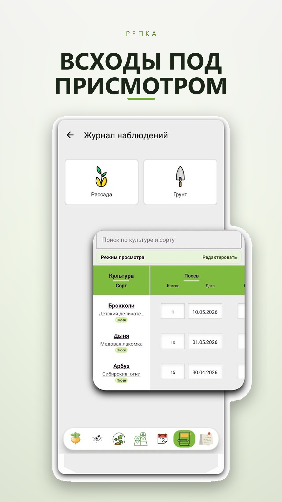
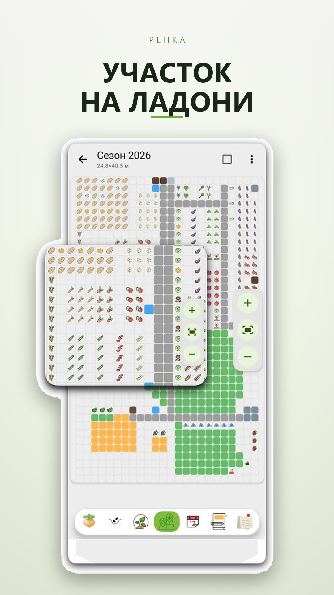
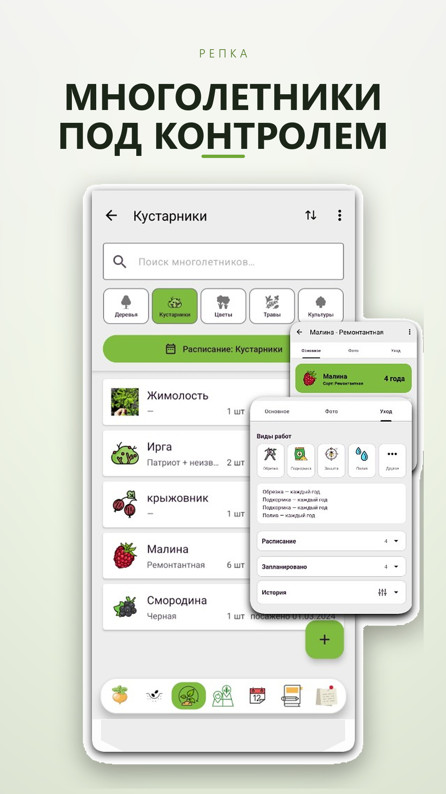

Семена в порядке
Культура, сорт, срок годности, фото пакетика. У посадки — глубина, расстояние, срок и удачные соседи. История, какие семена были посажены в какие годы (сезоны), с заметками об урожайности.

РЕПКА RuStoreДЛЯ САДА И ОГОРОДА
Репка - это садовый дневник: что посеяно, где растёт, когда поливать и что осталось из семян. Рядом — погода на участке, календарь работ и дела СНТ.





Шесть разделов, которыми пользуются в сезон, а не один раз весной.
Культура, сорт, срок годности, фото пакетика. У посадки — глубина, расстояние, срок и удачные соседи. История, какие семена были посажены в какие годы (сезоны), с заметками об урожайности.
Журнал рассады и грунта: что посеяно, в каком количестве и в какой день. Удобно сверять, не листая пакеты.
Схема грядок на сезон. Видно, где картофель, где зелень и что освободится к следующей посадке.
Кусты, цветы, травы и деревья. Обрезка, подкормка, защита и полив — с расписанием на год.
Задачи на конкретный день и лунный календарь садовода.
Адрес, контакты СНТ, членский и целевые взносы, электричество и квитанции. Погода считается по точке участка.
Учёт сада хранится на устройстве. Копию можно сохранить на Яндекс.Диск или в Облако Mail.ru.